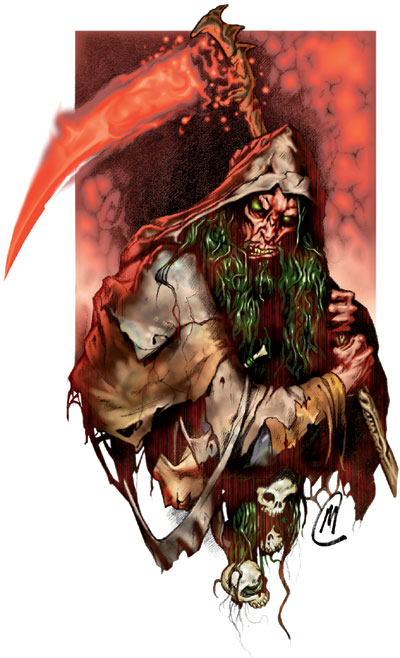

奈落（Nerull）

死神，善良之敌，生命憎恶者，黑暗使者，阴郁之王，血肉收割者
伟大神力
邪徽：骷髅与镰
居住位面：Carceri
阵营：中立邪恶
神职：死亡，黑暗，谋杀，地底世界
信徒：死灵师，刺客，游荡者，杀人犯
墓室阵营：混乱邪恶，守序邪恶，中立邪恶
领域：死亡，邪恶，诡术
偏好武器：巨镰
死神奈落乃是大名鼎鼎和臭名昭注的。他的面容干枯可怖，如同一只皮肤发着锈红色，头发浓密切带着黑绿色，披着一件黑色的斗篷，眼睛，牙齿和指甲上都浸透着剧毒品的尸骸骷髅一般。他的黑色法杖“夺命者”，能在杖头上形成一块如巨镰一般形状的光能刃，并碰触到任何生物，都能杀死对方。
教义
奈落是那些为了自身的快乐而作恶的人的绝对支持者。
在奈落冰冷的世界中，一切都是一样的。对他而言，所有活着的生物都是对他，死神的一种莫大侮辱，相反，所有的将死的生命闪耀着青黑的愉悦之火花，他喜欢这火花。有些人并不虔诚地向奈落祈祷，以期望获得奈落的力量。他们大多被奈落赐予了死亡的奖励。
神职人员与神殿
因为很少有人能够宽容地对待奈落的牧师，所以他们往往都是秘密且独立地活动。除了在那些遍布邪恶的地方，几乎没有有组织的奈落教会。由于没有教阶，独立的小教会们经常内讧。并且，死神在这里依然是恐惧的对象，为恶多端的人也害怕死神。奈落的牧师不需要易容的时候，一般穿着锈红色的祭袍。他们把杀人犯都当成祭品献给他们的神，可以说是凶手里的凶手。如果他们的行为被发现了，他们就会迁移到一个新的地方去，继续“狩猎”。他们中的部分人过着旅行生活，并且装成是善良人的样子出现在一个又一个的镇子。
奈落的神殿一般都是隐蔽的，就算是在那些遍布邪恶的地方。它们通常建在地下，一般是底下墓穴的一部分。大多数的神殿里圈养有不死生物以及其他传播死亡或制造死亡的生物，比如女妖和魔鬼。
奈落
死灵师10级/牧师20级/游荡者10级
中体形外界生物
神格等级：17
生命骰：20d8+140（外界生物）加10d4+70（死灵师）加20d8+140（牧师）加10d6+70（游荡者）（840hp）
先攻调整值：+15，总是最先行动（+11敏捷，+4精通先攻，绝对先攻）
速度：60尺
防御等级：77（+11敏捷，+17神格等级，+30天生防御，+9偏转）
攻击加值：+5光能锐锋加速巨镰 +70/+70/+65/+60/+55近战；或者法术 +64近战接触或 +73远程接触。攻击检定自然掷骰结果总为20，掷骰结果按重击计算。
伤害加值：+5光能锐锋加速巨镰 2d4+15/*4；或者使用法术，总是取最大伤害值（巨镰造成23点伤害）
占据/威胁范围：5尺*5尺/5尺
特殊攻击：每日24次斥责不死生物，偷袭 +5d6（30点），弱化攻击，领域神力，超凡神格能力，类法术能力
特性：神格免疫，伤害减免 52/+4，火元素伤害抗力37，神术自发性施法，理解、交谈及阅读所有语言并直接于任何17里内的生命存在交谈，远程沟通，神祗国度，随意无误传送，随意位面旅行，魔宠（蝙蝠），反射闪避，使用陷阱，离奇闪避（不能被夹击），SR69，神力光环（17里，DC36）
豁免调整值：坚韧 +56，反射 +60，意志 +64，豁免检定掷骰自然结果总是取20
能力值：力量 25，敏捷 33，体质 25，智力 35，感知 40，魅力 29
技能调整值：炼金术 +62，估价 +44，唬骗 +74，专注 +77，交涉 +58，解除装置 +49，易容 +83，躲藏 +91，威吓 +60，知识（奥术） +82，知识（历史） +49，知识（宗教） +82，知识（位面） +72，知识（不死生物） +82，聆听 +80，潜行 +76，开锁 +48，扒窃 +54，探知 +82，搜索 +72，察言观色 +90，辨识法术 +92，侦察 +80，技能检定掷骰自然结果总是取20
专长：制造药水，格斗施法，格斗反射，制造权杖，制造奇物，闪避，法术强效，额外驱散（*3），高级法术专攻（死灵系），高级法术渗透，精通先攻，法术接触，法术圣言，抄录卷轴，法术默发，法术专攻（死灵），法术渗透，法术定发，武器专攻（巨镰），法术扩展
神格免疫：属性伤害，属性吸取，酸，冷，即死效果，疾病，瓦解，电，能量吸取，心智影响效果，麻痹，毒，睡眠，震慑，变形，监禁，放逐。
超凡神格能力：改变现实，改变大小，奥术熟稔，区域神力护盾，毁灭打击，天神下凡，操控生物（不死生物），制造人工物品，创造高级物品，创造物品，神力冲击波，神力加速，神力创造，神力法术专攻（死灵），神力护盾，增强法术抗力，死亡之手，生命与死亡，生命吸取，自发性奥术施法，绝对先攻，不死生物特性。
领域神力：每日17次死亡之触（如果被触目标没有120点或以上的生命，则直接死亡）；施展邪恶领域法术时，施法者等级加1；
类法术能力：奈落可以相当于施法者等级为27级使用邪恶领域类法术能力，以相当于施法者等级为28使用其他类法术能力。类法术能力的基本豁免DC为36+法术等级。Animate dead,blasphemy,cause fear,change self,confusion,create greater undead,create undead,death knell,death ward,desecrate,destruction,dispel good,false vision,invisibility,magic circle agasinst good,mislead,nondetection,polymorph any object,protection from good,screen,slay living,summon monster IX（仅限以邪恶领域法术施展）,time stop,unholy aura,unholy blight,wail of the banshee
牧师每日神术：6/10/10/10/9/9/8/8/7/7；基础DC=25+法术等级，死灵类法术则为42+法术等级。
法师每日奥术：5/8/8/7/6/5；基础DC=21+法术等级，死灵类法术则为38+法术等级。
财产：奈落拥有一把名为“夺命者”的 +5光能锐锋加速巨镰。镰刀的刃部是从一根法杖中释放出的能量场。此锤制造施法者等级为25，重8磅。
其他神格能力
作为一个强大神力，奈落在任何掷骰中（包括攻击骰，伤害骰，豁免）自动取最高值，他是不朽的。
感知：奈落丁可以看见（使用通常或黑暗视觉），听见，触摸和嗅到17哩的距离。作为一个标准动作，他能够感知到任何动物，他的信徒，圣迹，与他有关的物体和任何他的名字在一个小时内被说出的地点周围17哩内的一切。他能够立即将他的感知延伸到20个地方。他立即能够在2个地方阻止神格等级等于或者小于他的神的感知力量，时间最长可达17个小时。
神职感知：奈落可以感知到尘世间十七周前或十七周后所发生的任何死亡
自动动作：奈落能够以一个自由动作使用其任何知识（奥术），知识（历史），知识（宗教），知识（位面），以及知识（不死生物）技能，只要该项任务的DC在30或者更低。他同样也能够以一个自由动作使用能制造死亡的法术或领域神力。他每轮能够完成20个类似的自由动作。
创造魔法物品：奈落能够创造出任何魔法匕首，飞镖，轻型硬头锤，闷棍，短弓，复合短弓，木棒，重型硬头锤，钉头锤，木杖，细剑，或者任何类型的十字弓，还有任何可以制造死亡效果的物品，比如mask of skull。他也可以创造出能帮助使用者化装和易容的魔法物品，比如ring of invisibility,robe of blending,或者hat of disguise
化身
奈落的化身的样子看上去和他本体一般。他很少使用化身，除非为见证一次特别有意义或怪异的死亡。
奈落的化身：如同奈落的本体，但以下除外：神格等级为8，防御等级59（接触38，措手不及59）；攻击加值 +61/+56/+51/+46/+41近战（2d4+14/*4，+5光能锐锋加速巨镰）或法术 +55近战接触或 +64远程接触；特性 伤害减免 43/+4，火元素伤害抗力 28，SR60，神力光环（800尺，DC27）；豁免调整值 坚韧 +46，意志 +54；所有技能调整值减9
超凡神格能力：改变大小，毁灭打击，操控生物（不死生物），神力冲击波，神力加速，神力法术专攻（死灵），神力护盾，增强法术抗力，绝对先攻，不死生物特性。
类法术能力：施法者等级为18；基本豁免DC为27+法术等级。
法术：如同奈落本体，但其牧师死灵类神术的豁免DC为33+法术等级，巫师死灵类神术的豁免DC为29+法术等级。